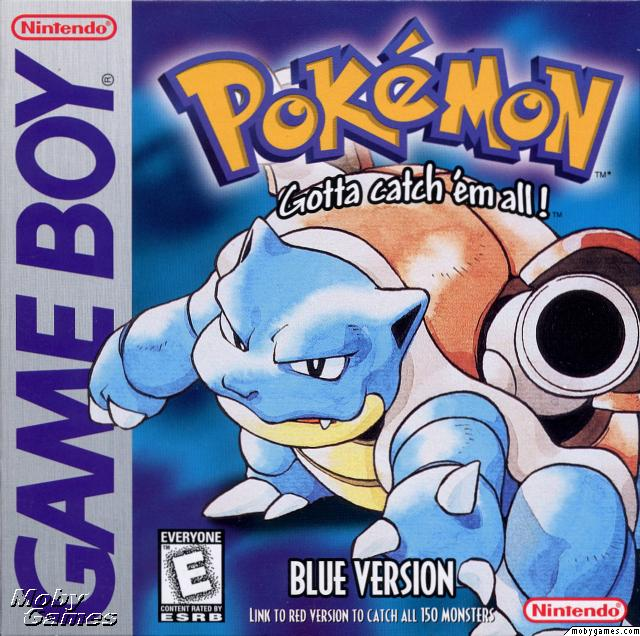

Welcome to Pokemon Fans a fan site that allows you to play the inconic quiz game "Whos that Pokemon" that was
created for the original airring of "Pokemon Indigo League"  in 1997 to play during ad breaks and the abilty
to purchase some of your favorite pokemon plushies.
in 1997 to play during ad breaks and the abilty
to purchase some of your favorite pokemon plushies.
A pair of video games for the original Game Boy handheld system that were developed by Game Freak and published by Nintendo in February 1996. The Pokémon video game series is the fourth best-selling video game franchise of all time with more than 380 million copies sold.
The Pokemon trading card game was published in 1999 by Wizards of the Coast and is still running strong today with tournament being held around the world and new cards being realese on a quarterly basis ever since.